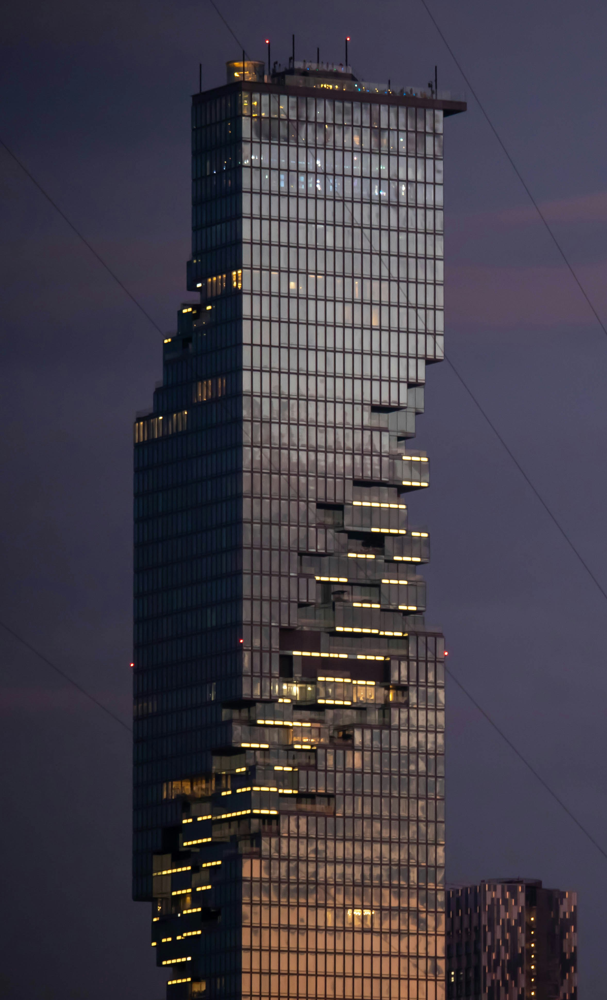

BANGKOK
Wat Arun
Grand Palace
Kingpower Mahanakhon
BTS Asok Station
Kingpower Mahanakhon
킹 파워 마하나콘
, 2016년에 개장한 태국의 가장 높은 빌딩이자 2010년대 이후 가장 대표적인 랜드마크중 하나로 자리 매김하며 방콕에 위치한 마천루.

Please enable JavaScript to view the
comments powered by Disqus.